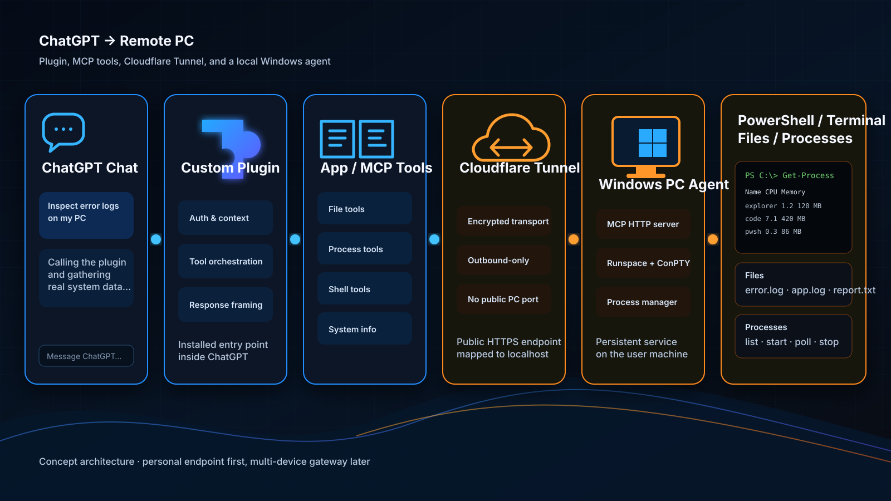
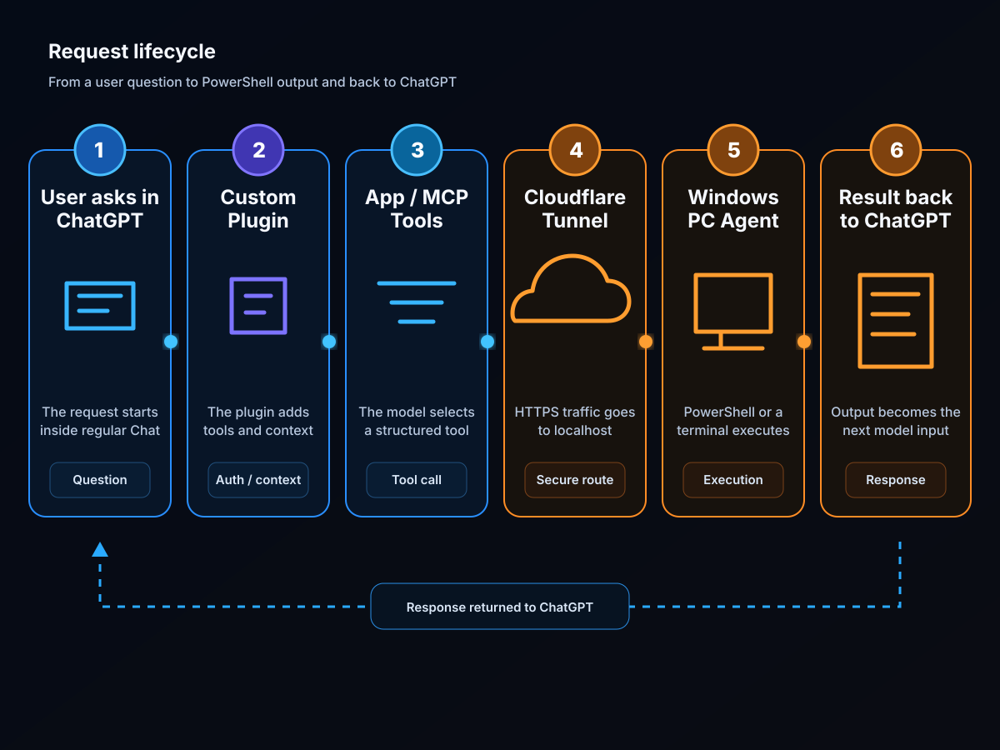
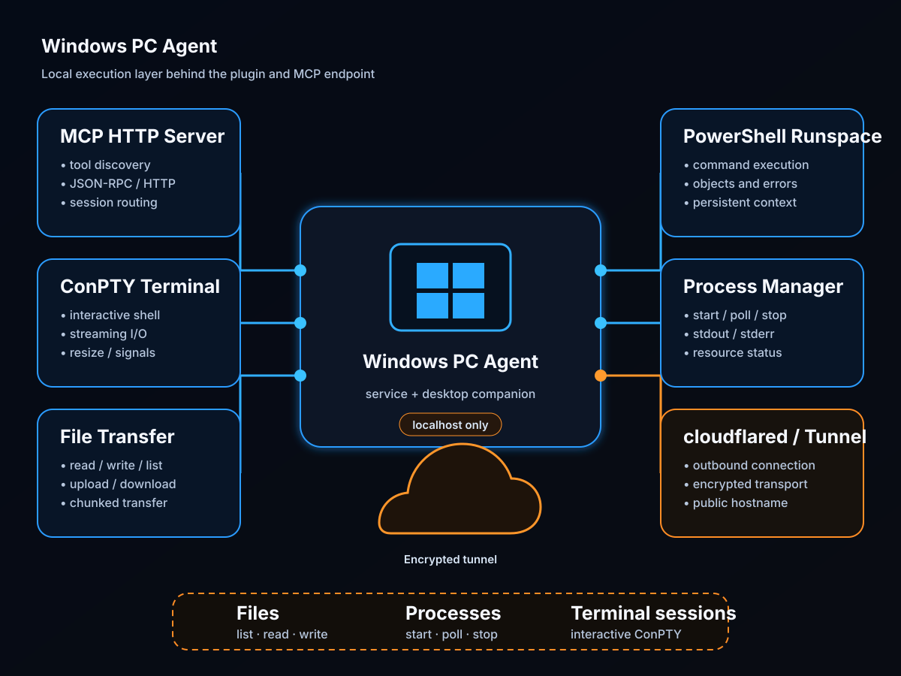

A ChatGPT Plugin for Remote Access to a User PC
I have been thinking for a while about the boundary between regular ChatGPT Chat and a real local working environment. Codex and other agentic modes already expose tools, but in normal ChatGPT Chat that kind of access only becomes possible through a user-installed plugin. So the core idea here is simple: build a plugin that becomes a stable entry point from ChatGPT to a user PC.
Why this plugin matters
I am not interested in an integration for its own sake. The practical scenario is very concrete: a user opens ChatGPT, selects an installed plugin, and can ask the model to inspect logs, check running processes, open PowerShell, find an error in a project, or run diagnostic commands on a remote machine.
The point is that the model should not guess the machine state from a text description. It should have a real channel into the system.
The core architecture
The concept is split into four parts:
- ChatGPT Plugin — the installable shell visible to the user.
- App / MCP integration — the tool layer exposed to the model inside ChatGPT.
- Cloudflare Tunnel — the transport path between ChatGPT and the local machine.
- Windows PC Agent — the local service that actually executes commands, works with files, and manages terminal sessions.

One important clarification: Cloudflare Tunnel does not replace the plugin. The tunnel only exposes an external HTTPS endpoint. For ChatGPT to use it, that endpoint still has to be wrapped as an App/MCP integration inside the user plugin.
Why a plugin alone is not enough
If we describe the system precisely, the plugin is only the entry point from the ChatGPT side. The real work happens deeper in the stack:
- the plugin installs and frames the integration;
- the MCP endpoint exposes the tool contract;
- the local agent performs the real actions in Windows;
- the tunnel delivers external traffic to localhost.
That is why the right mental model is not “a plugin to a PC”, but Plugin → App/MCP → PC Agent.
What the plugin should contain
At minimum, the user plugin should include:
- integration metadata;
- an App that points to the remote MCP endpoint;
- a Skill that teaches the model when to use PowerShell, when to use file operations, and when to switch into a terminal session;
- an optional UI layer if I later want to visualize session state, active processes, or terminal output.
In practice, this means the user selects a plugin in ChatGPT, and through it the model receives the tools of the remote PC.
How a single request flows through the system
The lifecycle of one request looks roughly like this.

The flow is straightforward:
- the user asks a question in ChatGPT;
- the model invokes a plugin tool;
- the App sends the request to the MCP endpoint;
- Cloudflare Tunnel forwards it to the agent’s local address;
- the agent runs a PowerShell command or another system operation;
- the result goes back into ChatGPT and becomes part of the next reasoning step.
A very practical example would be: “Check why my local project is not starting.”
What the local agent must do
The most important part of the whole system is the Windows PC Agent. That is the component that actually touches the machine.

I would design it around the following blocks:
- MCP HTTP Server — receives incoming requests and routes them to tools;
- PowerShell Runspace — executes commands and scripts while preserving session context;
- ConPTY Terminal — provides a real interactive terminal for long-running sessions;
- Process Manager — starts, stops, and monitors processes;
- File Transfer — reads, writes, uploads, and downloads files;
- cloudflared — publishes the local service through the tunnel.
Why both Runspace and ConPTY are necessary
At first glance, a single run_command tool may seem enough. In practice, it stops being enough very quickly.
PowerShell Runspace
This mode is perfect for ordinary commands and scripts:
Get-ProcessGet-ChildItemgit statusnpm installGet-ComputerInfo
The point here is not only to capture text output, but also to preserve structured results, warnings, errors, and execution status.
ConPTY Terminal
This mode is necessary for interactive and long-lived sessions:
npm run devwslssh- a Python REPL
- interactive installers
So a serious implementation almost inevitably needs two modes:
- single-shot PowerShell execution;
- a real terminal session.
MVP: what the first version should include
For the first working version, I would keep the tool set focused:
powershell_executeterminal_openterminal_writeterminal_readterminal_closefile_readfile_writefile_listprocess_startprocess_pollprocess_stopsystem_info
That is already enough to:
- inspect system state;
- troubleshoot a project;
- launch local services;
- read logs;
- return PowerShell output directly into ChatGPT.
Personal and multi-user architectures
Personal setup
The simplest version is one user and one specific machine:
- one plugin connected to one public MCP endpoint;
- that endpoint points through Cloudflare Tunnel to localhost on the target machine;
- the local agent performs every action.
For personal use, that is enough.
Multi-user service
A broader service would add a central gateway:
- ChatGPT Plugin
- central gateway / router
- user/device mapping
- a specific PC Agent
In that version, every agent registers with the gateway and requests are routed by user_id and device_id.
What still needs to be validated
Architecturally, the concept is realistic, but several things still need practical validation:
- the cleanest way to package the App inside the user plugin;
- how comfortable the model is with long-lived terminal sessions;
- how to stream process output cleanly;
- which confirmation layers remain mandatory at the platform level;
- whether a personal endpoint is enough at the start or a gateway is needed early;
- how large files and binary uploads should be handled.
Open questions
For now, I see this as a concept and an engineering architecture, not as a finished product. The major blocks are clear, the transport path is clear, and the Windows-side executor is clear. What remains open are the UX details, packaging decisions, and the real behavior of the integration inside ChatGPT.
That is why the next step should not be an attempt to build the “perfect” system immediately. The right next step is an MVP: one personal plugin, one PC Agent, one tunnel, and a small but useful set of tools.
Useful resources
These are the most relevant references to use during implementation:
- OpenAI Apps SDK: Quickstart
- OpenAI Apps SDK: connect an App to ChatGPT
- OpenAI: build plugins for ChatGPT and Codex
- OpenAI: Model Context Protocol in ChatGPT and Codex
- OpenAI: ChatGPT Developer Mode
- Model Context Protocol specification
- Cloudflare Tunnel documentation
- Cloudflare Tunnel setup and published applications
- Microsoft PowerShell SDK: Runspace class
- Microsoft Learn: creating a ConPTY/Pseudoconsole session
Conclusion
In short, the idea is this: regular ChatGPT gains access to a user PC not directly, but through an installed plugin that internally uses App/MCP integration, an external Cloudflare Tunnel, and a local Windows agent.
This is more than just “remote PowerShell”. It is an attempt to turn ChatGPT Chat into a durable access point to a user’s real working environment — first in a personal setup, and possibly later as a more general service.
Плагин для удалённого доступа ChatGPT к пользовательскому ПК
Я давно смотрел на границу между обычным ChatGPT Chat и локальной рабочей средой. Внутри Codex и отдельных агентных режимов доступ к инструментам уже существует, но в обычном чате такая возможность появляется только через подключаемый пользовательский плагин. Поэтому идея здесь простая: сделать плагин, который станет постоянной точкой входа из ChatGPT к пользовательскому ПК.
Зачем вообще нужен такой плагин
Меня интересует не абстрактная интеграция ради интеграции, а вполне практический сценарий: пользователь открывает ChatGPT, выбирает установленный плагин и может попросить модель посмотреть логи, проверить процессы, открыть PowerShell, найти ошибку в проекте или выполнить диагностические команды на удалённом компьютере.
Суть в том, что модель не должна «угадывать» состояние машины по описанию. Она должна иметь реальный канал к системе.
Основная идея
Архитектура делится на четыре части:
- ChatGPT Plugin — устанавливаемая пользователем оболочка.
- App / MCP integration — набор инструментов, которые становятся доступны модели внутри чата.
- Cloudflare Tunnel — внешний транспорт между ChatGPT и локальной машиной.
- Windows PC Agent — локальный сервис, который реально выполняет команды, работает с файлами и управляет терминальными сессиями.
Важный момент: сам по себе Cloudflare Tunnel здесь не заменяет плагин. Туннель только публикует внешний HTTPS endpoint. Чтобы ChatGPT вообще получил доступ к инструментам, этот endpoint должен быть оформлен как App/MCP-интеграция внутри пользовательского плагина.
Почему одного плагина недостаточно
Если говорить формально, плагин — это точка входа со стороны ChatGPT. Но реальная работа происходит глубже:
- плагин подключает интеграцию и объясняет модели, как с ней работать;
- MCP endpoint предоставляет инструменты и контракт вызовов;
- локальный агент исполняет действия в Windows;
- туннель доставляет трафик из внешней среды на localhost.
Именно поэтому архитектуру лучше мыслить не как «плагин к ПК», а как Plugin → App/MCP → PC Agent.
Состав плагина
В минимальном виде пользовательский плагин должен включать:
- metadata и описание интеграции;
- App с подключением к удалённому MCP endpoint;
- Skill, который объясняет модели, когда использовать PowerShell, когда — файловые операции, а когда — терминальную сессию;
- опциональный UI, если позже захочется визуализировать состояние процесса, список активных сессий или вывод терминала.
На практике это означает, что пользователь в обычном чате выбирает именно плагин, а уже через него модель получает доступ к инструментам удалённого ПК.
Как проходит один запрос
Ниже — упрощённый жизненный цикл одного запроса.
Логика такая:
- пользователь задаёт вопрос в ChatGPT;
- модель вызывает инструмент плагина;
- App направляет запрос на MCP endpoint;
- Cloudflare Tunnel передаёт трафик на локальный адрес агента;
- агент выполняет PowerShell-команду или другую операцию;
- результат возвращается в ChatGPT и используется в следующем шаге рассуждения.
В простом сценарии это может быть что-то вроде: «Проверь, почему мой локальный проект не запускается».
Что именно должен уметь локальный агент
Самая важная часть системы — это Windows PC Agent. Именно он даёт реальный доступ к среде.
Я бы закладывал в него следующие блоки:
- MCP HTTP Server — принимает внешние запросы и маршрутизирует их по инструментам;
- PowerShell Runspace — выполняет команды и скрипты с сохранением контекста сессии;
- ConPTY Terminal — даёт настоящий интерактивный терминал для долгоживущих процессов;
- Process Manager — отвечает за запуск, остановку и мониторинг процессов;
- File Transfer — позволяет читать, записывать, загружать и выгружать файлы;
- cloudflared — публикует локальный сервис наружу через туннель.
Почему нужны и Runspace, и ConPTY
На первый взгляд кажется, что можно обойтись одним инструментом run_command. Но этого быстро становится мало.
PowerShell Runspace
Подходит для обычных команд и скриптов:
Get-ProcessGet-ChildItemgit statusnpm installGet-ComputerInfo
Здесь важен не только текстовый вывод, но и возможность получить контролируемый результат, ошибки, предупреждения и статус выполнения.
ConPTY Terminal
Нужен для интерактивных и долго живущих сессий:
npm run devwslssh- Python REPL
- интерактивные установщики
То есть полноценная версия решения почти неизбежно требует двух режимов:
- одиночное выполнение PowerShell-команд;
- настоящая терминальная сессия.
MVP: что достаточно сделать первым
Для первой рабочей версии я бы ограничился следующим набором инструментов:
powershell_executeterminal_openterminal_writeterminal_readterminal_closefile_readfile_writefile_listprocess_startprocess_pollprocess_stopsystem_info
Этого уже достаточно, чтобы:
- проверять системное состояние;
- искать ошибки в проекте;
- запускать локальные сервисы;
- читать логи;
- получать вывод PowerShell прямо в ChatGPT.
Персональная и многопользовательская архитектура
Персональный вариант
Самый простой сценарий — один пользователь и один конкретный компьютер:
- плагин подключён к одному публичному MCP endpoint;
- endpoint указывает через Cloudflare Tunnel на localhost машины;
- локальный агент исполняет все действия.
Для личного использования этого достаточно.
Многопользовательский вариант
Если делать уже полноценный сервис, появится промежуточный gateway:
- ChatGPT Plugin
- central gateway / router
- user/device mapping
- конкретный PC Agent
В таком варианте каждый агент регистрируется на шлюзе, а запросы маршрутизируются по user_id и device_id.
Что ещё предстоит проверить
Архитектурно концепт выглядит реалистично, но несколько моментов всё равно нужно проверять на практике:
- как именно лучше упаковать App внутрь пользовательского плагина;
- насколько удобно модели работать с долгоживущими терминальными сессиями;
- как организовать потоковую передачу вывода процессов;
- какие подтверждения действий останутся обязательными на уровне платформы;
- нужен ли отдельный gateway уже на первом этапе или персонального endpoint достаточно;
- как лучше организовать работу с большими файлами и бинарными загрузками.
Открытые вопросы
Пока я отношусь к этому проекту именно как к концепту и инженерной архитектуре, а не как к готовому продукту. Здесь уже понятны основные блоки, понятен транспорт и понятен исполнитель на стороне Windows. Но остаются вопросы UX, упаковки и реального поведения интеграции внутри ChatGPT.
Именно поэтому следующий шаг я вижу не в попытке сразу строить «идеальную» систему, а в проверке MVP: сначала персональный плагин, один PC Agent, один туннель и базовый набор команд.
Полезные ресурсы
Ниже — ссылки, на которые имеет смысл опираться при реализации:
- OpenAI Apps SDK: Quickstart
- OpenAI Apps SDK: подключение App к ChatGPT
- OpenAI: создание плагинов для ChatGPT и Codex
- OpenAI: Model Context Protocol в ChatGPT и Codex
- OpenAI: ChatGPT Developer Mode
- Model Context Protocol: спецификация
- Cloudflare Tunnel: основная документация
- Cloudflare Tunnel: настройка и публикация локального сервиса
- Microsoft PowerShell SDK: класс Runspace
- Microsoft Learn: создание ConPTY/Pseudoconsole-сессии
Вывод
Если формулировать коротко, то идея сводится к следующему: обычный ChatGPT получает доступ к пользовательскому ПК не напрямую, а через установленный плагин, который внутри использует App/MCP, внешний Cloudflare Tunnel и локальный Windows-агент.
Это не просто «удалённый PowerShell». Это попытка превратить ChatGPT Chat в устойчивую точку доступа к рабочей среде пользователя — сначала в персональном режиме, а затем, возможно, и в виде более общего сервиса.